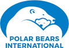
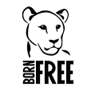

Nasıl Desktek Oluruz?
Kutuplardaki dostlarımıza destek olmak için her şeyden önce doğaya özen göstermeli,bilinçli bir tüketici olmalı ve yaptığımız eylemlerin geleceği etkileyeceğini bilerek hareket etmemiz gerekmektedir.
Bununla birlikte destek kampanyalarına bağışta bulunabilir,çevreci gruplara üye olup kutuplardaki sorunlara dikkat çekmelerine yardımcı olabilirsiniz.
Daha fazla bilgi için : impactful.ninja
Destekde bulunmak için kullanabileceğiniz bazı firmalar:
Greenpeace
Greenpeace'in Misyonu
KORU : Her türden biyoçeşitliliğin korunması
ENGELLE: Okyanusların, toprağın, havanın ve su kaynaklarının tahrip edilmesini engellemek
SON VER: Tüm nükleer tehditlere son vermek
YÜCELT: Barışa, küresel silahsızlanmaya ve şiddetsizliğe destek vermek
Greenpeace güven skoru : 86%
Polar Bears International
Polar Bears International'ın Misyonu
Medya,bilim ve toplumun desteğiyle insanları buzulları,gelecekte buzulların yaşayacağı sorunları ve buzulların küresel iklimle bağlantısını önemsemeye teşvik etmeye çalışmaktadırlar.
Polar Bears International güven skoru : 95%
Born Free Foundation
Born Free Foundation'ın Misyonu
tüm hayvanların şevkatle ve saygıyla ihtiyaçlarını karşılar nitelikte bir yaşam sürmesini sağlamaktır.
Born Free Foundation güven skoru : 82%